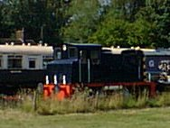
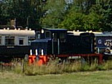

|

|

Site contents © Richard Foxcroft 1996-2000
|

|
Site contents © Richard Foxcroft 1996-2000
This line was in use until 2nd October, 1979, for Granville Colliery, and until a few years ago to bring goods into BOD (Base Ordnance Depot) Donnington, the huge military depot built in the '30s - along with much of the housing in Donnington - when the army moved its Central Ordnance Depot here from Woolwich Arsenal. Branching from the Shrewsbury - Birmingham line just east of Wellington, it used to go to Newport and Stafford; and bridges and remains of embankments can be seen along the way, although the Newport By-Pass has been built over some of it.
2010 - Last year, it was again re-opened to take goods trains to a Railfreight depot, where goods could be transferred between trains and trucks. There was much flourishing of trumpets and proclaiming of the large number of lorries it would take off the road. I have driven past it just about every working day since, often several times, and have seen precious few signs of activity: the depot seems to have become a store for out-of-use passenger trains.
The junction can be seen by following the line back in a cutting behind Furrows Ford dealership in Haybridge Road. It runs under the new Whitchurch Drive and the old lane next to it - old and new bridges together - then comes out onto level ground between the backs of houses, over a foot-crossing where a pair of rails remain, onto an embankment to a station at Leegate Avenue, Hadley, probably destroyed when that road and its new bridge were built. Immediately after that bridge is another, the fine stone Hadley Park Road bridge.
It is clear from these two bridges that this was originally a twin-track line; but by the time Telford New Town was developed, and new roads and bridges built, the line had become single-track, serving COD Donnington only.
(When you were a child at the school in Hadley Park Road, did you throw your apple-core over the fence onto the railway line? You did? So that's why there's an apple tree growing - and fruiting - on the top of the embankment there!)
There is a path between the railway and the school, fenced with up-ended railway sleepers.
The railway continues, embanked all the way to Donnington, behind a housing estate and alongside the Hadley Castle works of GKN Sankey to the site of the former junction at the end of Castle Lane. The ballast here is very wide, suggesting sidings for the Car Works; and I have seen a pohotograph showing at least four tracks..
The line to Lightmoor Junction, Buildwas Junction, Much Wenlock and Church Stretton bears away to the right.
Both lines were bridged over Castle Lane. The Lightmoor line bridge is gone, but the Newport line one is still there, a smaller version of the Hadley Park Road bridge, serving as a castle gate to the former Castle Car Works, now part of the highly-secure GKN Sankey site.
There are two new bridges to carry the line over Trench Lock Interchange. Trench Crossing Station is a hundred yards further on, at the end of Horton Road (which used to be a through route to that place). There was a level crossing here, and the cottage, fronting the railway not the road, would have been the station master's or crossing-keeper's house.
Si Parton told me:
My parents Bill and Nathalie Parton live at the Station House at Trench on the old Wellington to Stafford line.The station was formerly known as "Trench Crossings" I have many memories of there too,as I lived there from 1962 until 1985. Memories including the "Mail Train" that used to thunder past at midnight. Mum and Dad had to leave the crossing gates open for that particular train. A "bell push" was located either side of the crossing gates so that anybody in a car wishing to go over the crossing had to press this which operated a rather loud bell on our stairs landing that consequently woke-up everybody in our house!
Another footpath, from Trench Road opposite the Domindo Tool Hire depot, crosses the railway somewhat further on. Just past that point is the perimeter fence of BOD Donnington. The line can be seen curving left under the new bridge of New Trench Road, and it until recently made a big clockwise loop within the depot, as shown on the Telford Town Plan. But its original line to Newport has been recycled to make Trench New Road from just to the right of the bridge to Walkers Clock Roundabout, where Donnington Station, and indeed Donnington Village were. (The new Donnington housing, built by the army long before Telford came into being, and the typically 30s' shops known as Donnington Parade, which is considered its centre now, effectively moved Donnington some three quarters of a mile. Even the name is redolent of the period - cf Wythenshawe Estate, Manchester.)
Dave Cromarty told me:
The line to Granville [Colliery] diverged at the end of some exchange sidings just by the Little Theatre; you can still see the line of trees where it curved round to the east and crossed the old Newport road at a level crossing;.
Both the OS maps I have, though, appear to show the colliery line running close to, and then under, the LNWR line. Conversely, a sketch map in Regional History Railways of GB Vol 7, (Christianssen, David St. John Thomas) appears to show both! Gordon Roden (Jan 2003) explained:
There was a connection to the Wellington-Stafford line at Donnington by what was called the Coal Wharf: the N C B line came across the Wellington road and joined the main line by Walkers works/gas holders area.
Donnington Station is somewhere under Walker's Clock roundabout; and cars now go, as once trains did, along the mile straight towards Newport. Where the road bends right to rejoin its old route, there is a lane to the left, with a fine brick three-arch bridge over nothing, one of many such memorials to the transport of yesteryear.
{kind=link}
{kind=link}
{kind=link}
{kind=link}
{kind=link}
{kind=link}
{kind=link}
{kind=link}
{kind=link}
{kind=link}